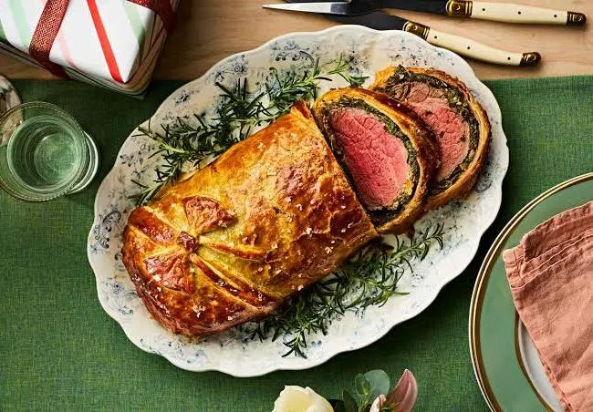

Return to Main Menu
Beef Wellington

About This Dish
This is a classic British dish. A tender filet mignon is coated in pâté and duxelles, wrapped in puff pastry, and baked until the pastry is golden brown.
Gather These Items
- 2 lbs Beef tenderloin
- 1 roll of Puff pastry
- 2 cups Mushrooms (duxelles)
- 8 slices Prosciutto
Cooking Instructions
- Season and sear the beef in a hot pan on all sides.
- Wrap the beef in prosciutto and the mushroom mix.
- Wrap everything in puff pastry and bake at 400°F for 25 minutes.